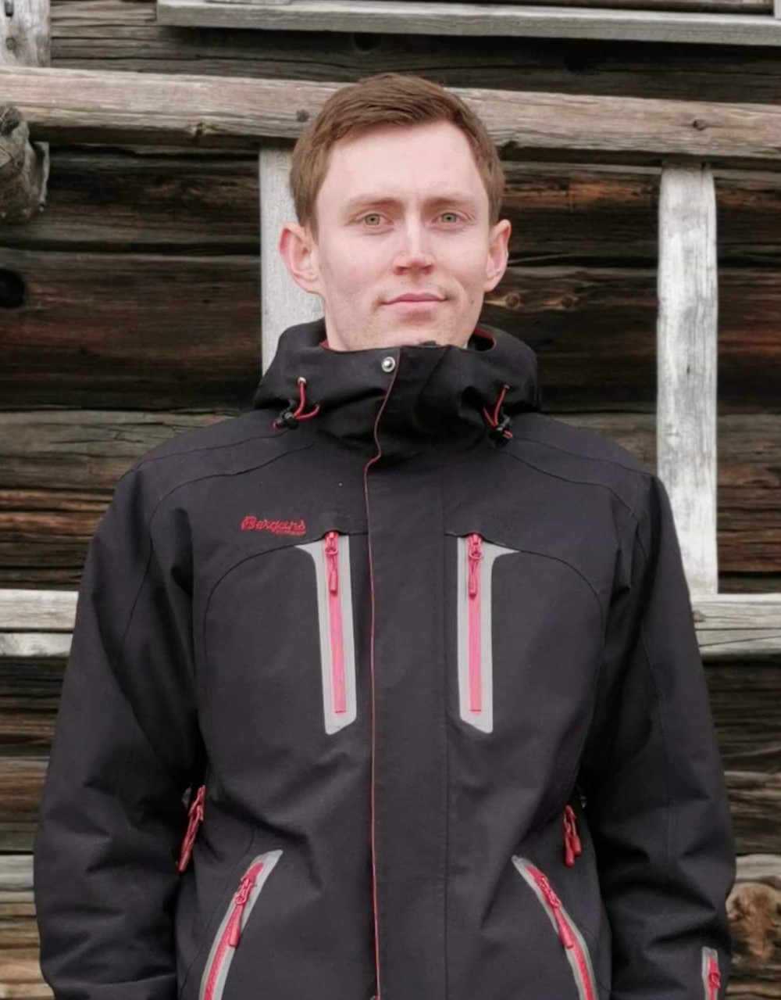

Hi! I'm Andreas
Front-end development student at Noroff Vocational School.

Front-end development student at Noroff Vocational School.
Hello! I'm a proud resident of Sarpsborg, practically waving to my neighbors in Sweden from my window. I've swapped out my electrician's tools for textbooks and chalk, and now I'm currently shaping young minds as a teacher (okay, maybe whiteboard markers are more popular to use these days and the textbooks have turned digital). My toolkit includes nature science, math and music - because who doesn't want to balance equations and play a beautiful piano melody?
When I'm not teaching, I'm studying Front-end development at Noroff Vocational School. Basically, I'm learning how to make the internet look pretty... and functional. So far, I've built 3 websites as student projects. My side projects are usually larger projects because hey, what's better than a good challenge that allows you to learn and feed your knowledge? Whether it's a classrom, a website, or some DIY adventure, I'm all about creating, learning, and coming up with new solutions to keep things exciting.
I'm also a master of solo missions and teamwork - so whether you need someone to solve a problem or just someone to listen to your "nest big idea", I'm your guy!